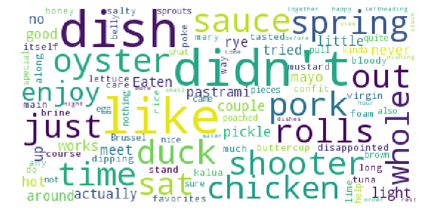

I love trying new restaurants and different cuisines. These days there is wide range of restaurants available and I rely on Yelp for ratings and reviews before trying a new one.
I like Yelp's platform where people can express their opinions and experience freely about any place they visited from grocery store to flying schools.
Sometimes I really like a restaurant but it shuts down and I never understand why or I never get to find out why. So, my friend and I came up with an idea to do some research. And since everyone these days rely on Yelp for restaurant/food reviews; we wondered if negative yelp reviews influence a restaurant to shutdown?
We did some digging by using reviews of 300 closed restaurants in San Francisco, CA. We used technologies like data scrapping, python - numpy, pandas, matplotlib, nltk, scipy and few others to acquire data and did analysis on it. The figure here is a wordcloud created by collecting all reviews (meaning the words that were repeated the most will have a bigger size - importance in the word cloud). We can see words like 'didn't', 'like', 'disappointed','salty', 'nothing' have some importance. Well that's not enough to connect the dots though. But it is clear that people were not very happy visiting those restaurants.
At the end we came to conclusion that Yelp reviews good/bad do not play a big role in shutting down a restaurant, there might be other reasons. To dig deeper into those reasons might be a good project altogether for some other time.
To find out more about our research please have a look at various plots and data that we summarised on this website. You can also get in-depth details regarding our code and analysis on Code page. Thank you for visiting!